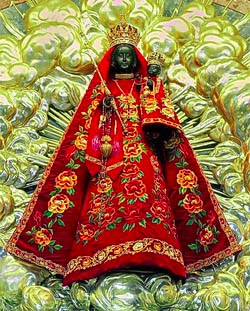

Schon im 13. Jahrhundert machen sich die Menschen der umliegenden Länder auf den Weg zum heute grössten Wallfahrtsort der Schweiz. Besonderes Heil versprechen sie sich in der Gnadenkapelle, die in der Nacht vor der offiziellen Weihe durch Christus selbst geweiht wurde. So erzählt es die Legende, und auch die Deckengemälde geben noch Zeugnis davon. Nach der französischen Revolution findet besonders das Gnadenbild der Muttergottes die Beachtung der Pilger. Der Russ der Andachtskerzen hatte das Gesicht der Madonna einst schwarz gefärbt. Nach einer Restauration bekam sie dann endgültig dieses Antlitz. Statt sich befremdet anderen Heilsgegenständen zuzuwenden, kamen die Menschen und versprachen sich besondere Kräfte von dieser Madonna. Noch heute zieren Dankesbriefe, sogenannte Votivtafeln, die Kirchenwand und die Marienfigur besitzt bereits so viele verschiedene Kleider, dass ein Pater bereits eine Modenschau veranstalten konnte.
Die „Heilige Krankheit“
Im Jahr 1815 wird Maria Elisabetha Nägel, eine bürgerliche Jungfrau, im Alter von 36 Jahren am Wallfahrtsort Maria Einsiedeln von ihrer Besessenheit geheilt. Seit anderthalb Jahren leidet die fromme Frau unter furchterregenden Anfällen, gegen die die Mittel der Ärzte wirkungslos bleiben. In Begleitung ihrer Eltern hat sie bereits mehrere Versuche unternommen, durch eine Wallfahrt Linderung zu erfahren. Doch kam der Zeitpunkt der Reise näher, begann die Unglückliche zu rasen. Um sie nicht weiter zu beunruhigen, wurden sogleich alle geweihten und geheiligten Gegenstände aus ihrem Zimmer entfernt und der Name Jesu vor ihr nicht mehr ausgesprochen. Als die Jungfrau einmal am Heiligen Abendmahl teilnehmen möchte, wird ihr ganzer Körper unruhig, ihr Haupt geschüttelt, die Brust in die Höhe gezogen, und die Stimme bringt Geräusche ähnlich einem Hund hervor. Erst als sie im Oktober 1815 von ihrer Reise nach Einsiedeln zurückkehrt, ist sie geheilt. So beschreibt es das Einsiedler Mirakelattestat und bestätigen es die Zeugen. Die Krankheit, die sich hier zeigt, würde heute kaum noch jemand als Besessenheit bezeichnen. So, wie der Anfall in der Kirche geschildert wird, ist eine Epilepsie wahrscheinlicher. Das plötzliche Einsetzen, besonders auch in psychisch aufreibenden Momenten, z.B. wenn eine Wallfahrt ansteht, die plötzlich einsetzenden Zuckungen, die den ganzen Körper einnehmen und die unkontrollierbaren Lautäusserungen weisen deutlich auf solche Krampfanfälle hin. Schon früh wurde diese Krankheit, deren Anfälle sich so eindrücklich und furchterregend gestalten, mit etwas Magischem, Dämonischem oder gar Göttlichem assoziiert. In der hippokratischen Schrift „Über die Heilige Krankheit“, die um 400 v.Chr. entstanden ist, wird beschrieben, wie die Menschen aus lauter Ratlosigkeit und Verwunderung glauben, diese Krankheit müsse göttlichen Ursprungs sein, da sie mit den bekannten Krankheiten in keiner Weise vergleichbar sei. Und so versuchte man sie auch durch Sühnehandlugen und Besprechungen zu heilen.
Bildquelle: www.wallfahrt-einsiedeln.ch
Gesundheit durch Religion?
Behandlungsweisen oder Wunderheilungen wie die der Maria Elisabetha Nägel in Einsiedeln und die damit verbundene Einheit von Religion und Gesundheit wirken in unserer rationalen Zeit auf viele befremdlich. Schon Hippokrates hielt die heilige Krankheit weder für göttlicher noch für heiliger als jede andere Krankheit, sondern sah in allem eine natürliche Ursache. Geschichtlich gesehen ist die Verbindung von Religion und Gesundheit jedoch eher die Regel als die Ausnahme. Die Heilung durch die Hand Gottes oder der Götter spielte in vielen Kulturen durch die Zeit eine bedeutende Rolle. Man kann sogar davon ausgehen, dass in der griechischen Antike die Naturmedizin, wie sie an der Schule des Hippokrates gelehrt wurde, und die kultische Heilkunde um die Götter Asklepios und Hygieia nebeneinander existierten und sich gegenseitig Patienten überwiesen. Da der neue Gott der Israeliten im ersten vorchristlichen Jahrtausend zunächst nicht für die Geburt und die Zeit nach dem Tod zuständig war, wurde in diesen Bereichen weiterhin die Göttin Aschera verehrt. Diese Bereiche waren zu wichtig, um ohne Schutzherrschaft zu bleiben. In Form von Segensfigürchen oder Amuletten sollte die Baum- und Zweiggöttin die Träger und Trägerinnen schützen und auch heilen.
Tempelschlaf und „Christus Medicus“
Auch der Asklepiosstab des gleichnamigen Gottes, der als Symbol des Ärztestandes heute noch viele Apotheken ziert und das von der Göttin Hygieia abgeleitete Wort Hygiene verweisen auf einen Heilkult, der sich in der Antike grösster Beliebtheit erfreute. Länger als andere Kulte überlebte er die religiösen Umstrukturierungen im römischen Reich und verschwand erst durch den verschärften Kurs von Kaiser Theodosius um 400 n.Chr zusammen mit anderen bedeutenden Einrichtungen wie dem Orakel von Delphi und den Olympischen Spielen von der Bildfläche. Bevor er durch den „Christus Medicus“ ersetzt wurde, pilgerten Kranke ab dem 4. vorchristlichen Jahrhundert in Strömen mit ihren Familien in die ausserhalb der Stadt gelegenen Asklepiostempel. Während des nächtlichen Tempelschlafes, oder wie neuere Forschungen vermuten unter Hypnose, empfingen sie von dem Gott im Traum Behandlungsanweisungen und diätetische Empfehlungen. Manchmal legte er ihnen auch die Hand auf. Als Dank töpferten sie Nachbildungen der geheilten Organe, die sie vor Ort zurückliessen. Doch war dieser heilende Schlaf in heiligen Hallen keineswegs eine Entdeckung der Griechen. Bereits in den Tempeln der ägyptischen Göttin Isis wurden die Hilfesuchenden in einen neun Tage dauernden „magnetischen“ Schlaf versetzt, in dem ihnen die Göttin Diagnose und Behandlungsanweisungen gab. Die unserem Kulturkreis näher stehende Maria, an die sich auch Maria Elisabetha Nägel auf ihrer Wallfahrt wandte, wird meist mit dem Jesuskind abgebildet und erinnert in dieser Darstellungsweise an jene der sehr viel älteren Isis mit ihrem Horusknaben und ihre schützende und heilende Kraft.
Visionen und Medizinpfarrer
Nach der Karolingischen Reform im frühen Mittelalter musste die antike Medizin dann eine christliche Rechtfertigung finden und allzu heidnische Passagen umgedeutet werden. Im neuen christlichen Gewand fand sie zusammen mit der regionalen Kräuterkunde Einzug in die Kloster- und Stiftsschulen. So manche Regeln innerhalb der Mönchsgemeinschaften und auch ihr asketisches Ideal erinnern an die Diätetik des Hippokrates oder die Vorschriften der hellenistischen Philosophenschulen zur Zeit des frühen Christentums. Eine der berühmtesten Vertreterin der Heilkunde im Hochmittelalter ist zweifelsohne die Benediktinerin Hildegard von Bingen (1098-1179). Geschickt verband sie mystische und volksheilkundliche Elemente. Visionen und Kräutergarten lebten in friedlicher Koexistenz. Für sie war klar, dass Gott in den Pflanzen wirkt und es nur zur Heilung durch sie kommen kann, wenn er es will. Während es kurze Zeit später den Geistlichen verboten wurde, heilkundlich tätig zu sein oder auszubilden, bekam ein Anwärter in der späten Aufklärungszeit in Hessen nur eine Pfarrstelle, wenn er medizinische Kenntnisse nachweisen konnte. Dies ist jedoch wohl eher auf den Mangel an medizinischem Personal auf dem Lande zurückzuführen. Weitgehend ohne religiöse Inhalte lebte die Klostermedizin so gewissermassen in der aufkommenden Pastoralmedizin weiter. Im Zeitalter der Rationalität und Aufklärung sind Pfarrer, die durch Gebet und Beschwörung heilen, eher eine Ausnahme und sorgen für viel Aufsehen. So zog der Geistliche Johann Josef Gassner mit seinem öffentlich betriebenen Exorzismus in der Mitte des 18. Jahrhunderts wahre Menschenströme an und auch das Wallfahrtswesen erfreute sich kurze Zeit später wieder grösster Popularität. Und heute? So ausgefeilt unser modernes Medizinsystem ist, so hilfesuchend begeben sich die Kranken weiterhin in die Hände von religiösen Heilern. Das Fremde zieht an und so erfahren alte Traditionen wie der Schamanismus, der in unseren Breiten zu einem Sammelbegriff für nordasiatische, indianische und afrikanische Heilmethoden verkommen ist, ein reges Interesse. Selbst den Tempelschlaf kann man in einer Naturheilpraxis in Schleswig-Holstein wieder vollziehen. Und weiterhin strömen jährlich ca. 170 000 Pilger und Pilgerinnen nach Einsiedeln.
Ulrike Münger ist Studentin der Theologie im Master an der Universität Bern.
Weitere Artikel von {{author.author}} finden Sie hier:
- {{author.location[i]}}: {{author.fulltitle[i]}} {{beitrag}}
Zur Vertiefung:
- Barbara A. Montserrat Wick, Wunderheilungen am Wallfahrtsort Maria Einsiedeln im Spiegel handschriftlicher Zeugnisse von 1815-1864, Bern 2000.